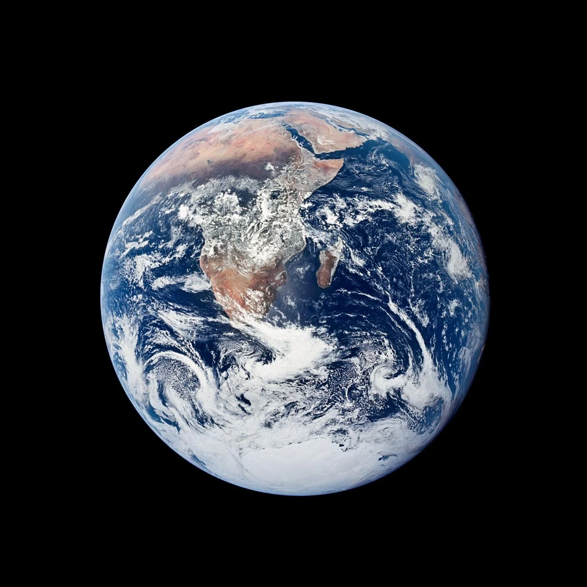

Open photo ⤢From the archive · Photography
Earth from Apollo 17
NASA’s Apollo 17 crew photographed Earth on 7 December 1972. Photo credit: NASA
Browse AP world photography ↗Inside Mauritius / International
Reporting from six regions, with links to the original publishers.
Checking published headlines…

Open photo ⤢From the archive · Photography
NASA’s Apollo 17 crew photographed Earth on 7 December 1972. Photo credit: NASA
Browse AP world photography ↗Inside Mauritius · Video
Our six-second silent World Desk introduction. Open video file
Watch international reports on Al Jazeera ↗Headlines are collected automatically. Open the publisher’s report to check developing details.
Loading headlines…
Explore the publishers directly. Feed coverage varies by region.